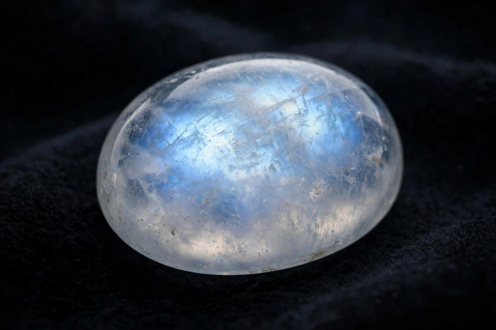

Moonstone is a sodium potassium aluminium silicate feldspar gemstone known for its pearly, opalescent lustre. Its name derives from its visual effect — a soft, billowy light that appears to float across the surface of the stone, an optical phenomenon called adularescence. Moonstone is composed of alternating layers of the feldspars orthoclase and albite; light scattering between these microscopically thin layers produces the characteristic glow.
| Moonstone | |
|---|---|
 A polished moonstone cabochon showing a blue-white adularescent sheen Moonstone cabochon with blue sheen | |
| Category | Feldspar mineral |
| Formula | (Na,K)AlSi3O8 |
| Crystal system | Monoclinic |
| Colour | Colourless, white, grey, peach, blue sheen |
| Mohs hardness | 6.0–6.5 |
| Lustre | Pearly, opalescent |
| Optical phenomenon | Adularescence |
Moonstone occurs in pegmatites and other igneous and metamorphic rocks. Historically the most prized stones, with a strong blue sheen on a colourless body, came from Sri Lanka (Ceylon). Other significant sources include India — an important modern supplier of rainbow moonstone (a variety of labradorite marketed under the name) — as well as Myanmar, Madagascar, Tanzania, Brazil, Mexico, and the United States. Deposits in Sri Lanka occur in the southern part of the island, where the stone has been mined for centuries.
Moonstone has been used in jewellery for millennia. The Romans admired it, believing it was born of solidified rays of the Moon, and it features in ancient Indian tradition as a sacred stone. It enjoyed a major revival during the Art Nouveau period, when designers such as René Lalique incorporated it into their work, and again in the 1960s and the New Age movement of later decades.
The gem is most often cut as a smooth-domed cabochon to display its floating light; the higher the dome and the more centred the sheen, the more valuable the stone. Moonstone is relatively soft and can be abraded or cleaved by knocks, so it is better suited to pendants and earrings than to rings worn daily.
Moonstone is an alternative birthstone for June, alongside pearl and alexandrite. In folklore it has been associated with lunar deities, intuition, fertility, and safe travel at night. In 1970 Florida designated moonstone its state gemstone to commemorate the Apollo Moon landings, although the stone does not occur naturally in the state.
Categories: Feldspar · Gemstones · Silicate minerals